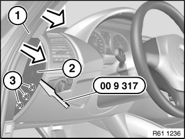
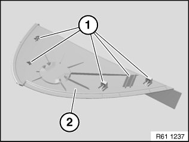
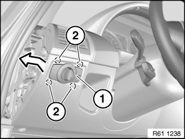

Headlamp Switch: Service and Repair
61 31 037 Removing And Installing/Replacing Light Control Unit
Special tools required:

Detach mucket (1) in area of trim (2) in direction of arrow.
Lever out trim (2) with special tool 00 9 317 at mounting points (3) and remove.

Installation:
Retaining lugs (1) on trim (2) must not be damaged.

NOTE: Unlock concealed catches (2) of light control unit (1) through opening created by removed trim.
Unlock concealed catches (2) of light control unit (1) and feed out light control unit (1) in direction of arrow.
Disconnect associated plug connection and remove light control unit (1).
Installation:
- Catches (2) of light control unit (1) must not be damaged.
- Make sure catches (2) are correctly seated.